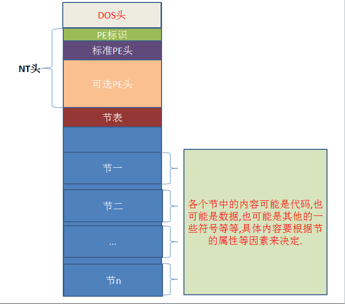

# win32 下的 PE 文件:
PE是Portable Execute的缩写,是可移植可执行的意思,只要文件的数据结构遵循PE结构,就属于PE文件,windows中常见的PE文件有
*.sys驱动类文件
*.dll动态链接库文件
*.exe可执行文件
*.ocx对象类别扩充组建
*.obj目标文件等.
同样,linux中使用的是ELF格式,和windows的PE格式有一定的差别,如:
可重定位文件*.o
可执行文件如/bin/ls等
共享目标文件*.so
核心转储文件core
都遵循ELF数据结构. unix从system v4开始也使用ELF了,而他们的始祖都是unix system v3的中COFF.如下图:

# PE 文件结构
源自看雪论坛

win32 中 PE 的逻辑图:
一个标准的 PE 文件由 DOS 头，stub,NT 头 (包含 PE 标识，标准 PE 头和可选 PE 头三个成员), 节表，节的内容以及一些为了内存对齐而填充的 0.

# DOS 头
DOS 头就是一堆数据，但它们是一个有序的有含义的组合在一起的结构体。
DOS 头是为了兼容 DOS 程序而设的，现在基本已经用不上了，仅有两个有意义的字段，所以还是很简单的。
DOS 头对应的结构体名称叫 IMAGE_DOS_HEADER
0x00 WORD e_magic * //"MZ标记" 用于判断是否为可执行文件
0x3C DWORD e_lfanew; * //PE头相对于文件的偏移，用于定位PE文件
# win32 中 PE 的 NT 头
NT 头是 PE 文件中标准 PE 头和可选 PE 头的总体称谓，还包含一个 PE 标识。下面是它在 Visual C++ 6.0 中 WINNT.h 中的定义:
typedef struct _IMAGE_NT_HEADERS64 {
DWORD Signature;
IMAGE_FILE_HEADER FileHeader;
IMAGE_OPTIONAL_HEADER64 OptionalHeader;
} IMAGE_NT_HEADERS64, *PIMAGE_NT_HEADERS64;
typedef struct _IMAGE_NT_HEADERS {
DWORD Signature; //PE标识
IMAGE_FILE_HEADER FileHeader; //标准PE头(也称文件头)
IMAGE_OPTIONAL_HEADER32 OptionalHeader; //可选PE头
} IMAGE_NT_HEADERS32, *PIMAGE_NT_HEADERS32;
第一个是 64bit 的 NT 头定义，第二个是 32bit 的。这里只探讨 32bit 的。标准 PE 头也叫文件头，这不重要，知道是那么个东西就行了，个人不太喜欢动不动就用高端名词，高端名词主要是为了严谨而取出来的，但是很多时候很晦涩，通俗易懂更易让人接受.
# 标准 PE 头
这些内容源自滴水的课件
0x00 WORD Machine; * //程序运行的CPU型号：0x0 任何处理器/0x14C 386及后续处理器
0x02 WORD NumberOfSections; * //文件中存在的节的总数,如果要新增节或者合并节 就要修改这个值.
0x04 DWORD TimeDateStamp; * //时间戳：文件的创建时间(和操作系统的创建时间无关)，编译器填写的.
0x08 DWORD PointerToSymbolTable;
0x0C DWORD NumberOfSymbols;
0x10 WORD SizeOfOptionalHeader; * //可选PE头的大小，32位PE文件默认E0h 64位PE文件默认为F0h 大小可以自定义.
0x12 WORD Characteristics; * //每个位有不同的含义，可执行文件值为10F 即0 1 2 3 8位置1
# 可选 PE 头
WORD Magic; * //说明文件类型：10B 32位下的PE文件 20B 64位下的PE文件
BYTE MajorLinkerVersion;
BYTE MinorLinkerVersion;
DWORD SizeOfCode;* //所有代码节的和，必须是FileAlignment的整数倍 编译器填的 没用
DWORD SizeOfInitializedData;* //已初始化数据大小的和,必须是FileAlignment的整数倍 编译器填的 没用
DWORD SizeOfUninitializedData;* //未初始化数据大小的和,必须是FileAlignment的整数倍 编译器填的 没用
DWORD AddressOfEntryPoint;* //程序入口
DWORD BaseOfCode;* //代码开始的基址，编译器填的 没用
DWORD BaseOfData;* //数据开始的基址，编译器填的 没用
DWORD ImageBase;* //内存镜像基址
DWORD SectionAlignment;* //内存对齐
DWORD FileAlignment;* //文件对齐
WORD MajorOperatingSystemVersion;
WORD MinorOperatingSystemVersion;
WORD MajorImageVersion;
WORD MinorImageVersion;
WORD MajorSubsystemVersion;
WORD MinorSubsystemVersion;
DWORD Win32VersionValue;
DWORD SizeOfImage;* //内存中整个PE文件的映射的尺寸，可以比实际的值大，但必须是SectionAlignment的整数倍
DWORD SizeOfHeaders;* //所有头+节表按照文件对齐后的大小，否则加载会出错。一定是文件对齐的整数倍
DWORD CheckSum;* //校验和，一些系统文件有要求.用来判断文件是否被修改.
WORD Subsystem;
WORD DllCharacteristics;
DWORD SizeOfStackReserve;* //初始化时保留的堆栈大小
DWORD SizeOfStackCommit;* //初始化时实际提交的大小
DWORD SizeOfHeapReserve;* //初始化时保留的堆大小
DWORD SizeOfHeapCommit;* //初始化时实践提交的大小
DWORD LoaderFlags;
DWORD NumberOfRvaAndSizes;* //目录项数目
# 节表（区段，节区，节段等等）
#define IMAGE_SIZEOF_SHORT_NAME 8
typedef struct _IMAGE_SECTION_HEADER {
0x00 BYTE Name[IMAGE_SIZEOF_SHORT_NAME];
union {
0x08 DWORD PhysicalAddress;
0x08 DWORD VirtualSize;
} Misc;
0x0c DWORD VirtualAddress;
0x10 DWORD SizeOfRawData;
0x14 DWORD PointerToRawData;
0x18 DWORD PointerToRelocations;
0x1c DWORD PointerToLinenumbers;
0x20 WORD NumberOfRelocations;
0x22 WORD NumberOfLinenumbers;
0x24 DWORD Characteristics;
};
1、Name 8 个字节 一般情况下是以 "\0" 结尾的 ASCII 吗字符串来标识的名称，内容可以自定义.
注意：该名称并不遵守必须以 "\0" 结尾的规律，如果不是以 "\0" 结尾，系统会截取 8 个字节的长度进行处理.
2、Misc 双字 是该节在没有对齐前的真实尺寸，该值可以不准确。
3、VirtualAddress 节区在内存中的偏移地址。加上 ImageBase 才是在内存中的真正地址.
4、SizeOfRawData 节在文件中对齐后的尺寸.
5、PointerToRawData 节区在文件中的偏移.
6、PointerToRelocations 在 obj 文件中使用 对 exe 无意义
7、PointerToLinenumbers 行号表的位置 调试的时候使用
8、NumberOfRelocations 在 obj 文件中使用 对 exe 无意义
9、NumberOfLinenumbers 行号表中行号的数量 调试的时候使用
10、Characteristics 节的属性
# 个人笔记
BYTE 是字节的意思，字节是计算机存储容量的基本单位，一个字节由 8 位二进制数组成。
bit 是位的意思，位是计算机中存储数据的最小单位，指二进制数中的一个位数，其值为 “0” 或 “1”
WORD = 2 * BYTE = 16 bit
DWORD = 2 * WORD = 4 * BYTE = 32 bit
QWORD = 2 * WDORD = 4 * WORD = 8 * BYTE = 64 bit
一个 BYTE 以十六进制显示，是一个 2 位十六进制数.
一个 WORD 以十六进制显示，是一个 4 位十六进制数.
一个 DWORD 以十六进制显示，是一个 8 位十六进制数.
一个 QWORD 以十六进制显示，是一个 16 位十六进制数.
# 看 PE 文件，查找重要信息的位置
- 查找 PE 结构的各个位置
DOS 头 ->NT 头
直接看 0x3c 到 0x3f 的数据，这个值是 PE 标识符的位置，既_IMAGE_NT_HEADER（NT 头）结构中的 Signature，为 50 45 既 ASCII 码字符 PENT 头中的_IMAGE_FILE_HEADER FileHeader
NT 头往后查 0x06（0d06），0x06 与 0x07 记录着节区的个数，如果要新增节或者合并节 就要修改这个值。
NT 头往后查 0x14（0d20）, 0x14 与 0x15 记录着可选 PE 头的大小
NT 头往后查 0x18（0d24），就是 _IMAGE_OPTIONAL_HEADER（可选 PE 头）的开始NT 头中的_IMAGE_OPTIONAL_HEADER
- +0x00 WORD Magic; 说明文件类型：0x010B 32 位下的 PE 文件 0x20B 64 位下的 PE 文件
- +0x10 DWORD AddressOfEntryPoint; 程序入口
- +0x1C DWORD ImageBase; 内存镜像基址
- +0x20 DWORD SectionAlignment; 内存对齐
- +0x24 DWORD FileAlignment; 文件对齐
- +0x38 DWORD SizeOfImage; 内存中整个 PE 文件的映射的尺寸，可以比实际的值大，但必须是 SectionAlignment 的整数倍
- +0x3C DWORD SizeOfHeaders; 所有头 + 节表按照文件对齐后的大小，否则加载会出错
节表
- 位置查找：直接找 NT 头，往后查找 0x14 个字节，记下这里的可选 PE 头的大小。
从 NT 头开头往后查找 0x18 + 记下的 PE 头的大小，这里就是第一个节表的位置。 - 每一个节表的大小为 40 字节。
- +0x00 Name 节表的名字 8 个字节
- +0x0C DWORD VirtualAddress 节区在内存中的偏移地址。加上 ImageBase 才是在内存中的真正地址
- +0x10 DWORD SizeOfRawData 节在文件中对齐后的大小
- +0x14 DWORD PointerToRawData 节区在文件中的偏移
- +0x24 DWORD Characteristics 节的属性
- 位置查找：直接找 NT 头，往后查找 0x14 个字节，记下这里的可选 PE 头的大小。
2020 年 11 月 26 日 21:00:35
# 真正的程序入口
2021年5月2日17:16:32
- 0x10 DWORD AddressOfEntryPoint; 程序入口
- 0x1C DWORD ImageBase; 内存镜像基址
AddressOfEntryPoint 只是相对 ImageBase 的偏移。
真正的程序开始的地方是 ImageBase + AddressOfEntryPoint
这也是 OD 开始断的地方。